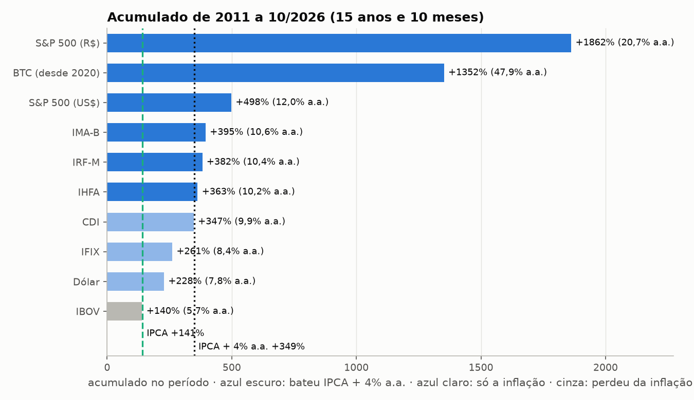
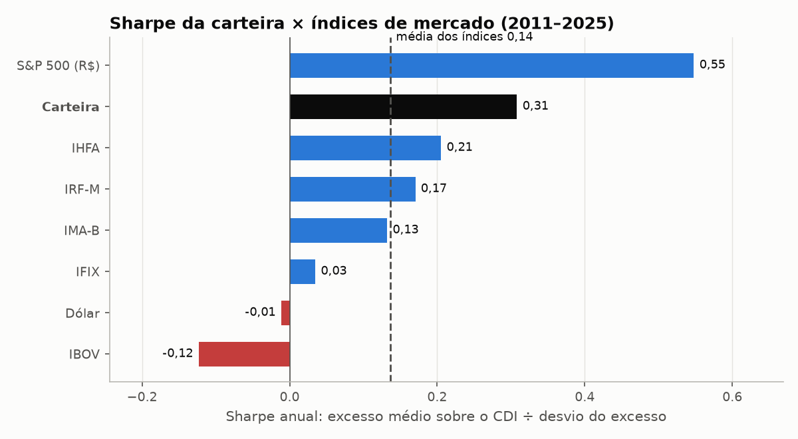

Índices de mercado 2026
carregando…
Resumo
Mês a mês em 2026 (retorno %)
Fechamento anual, 2011 a 2025, e 2026 até o mês atual (retorno %)
Análise por período
Escolha o período. A volatilidade é o desvio-padrão dos retornos anuais dentro dele (com poucos anos, é só uma referência). Bitcoin só tem dados a partir de 2020.
De a
Gráficos


